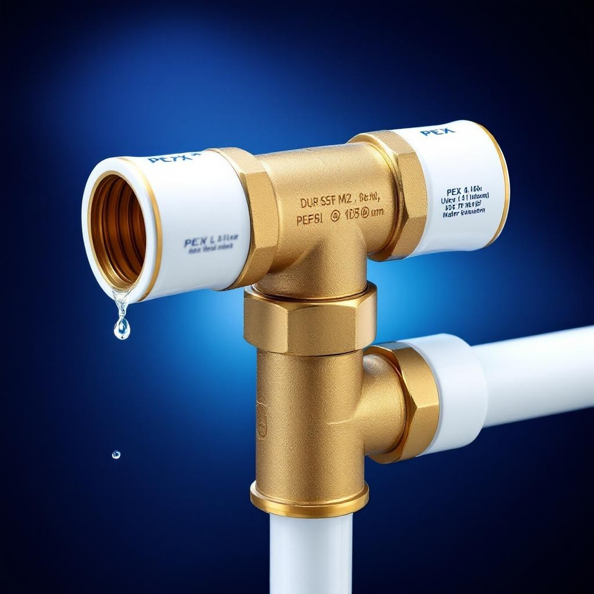
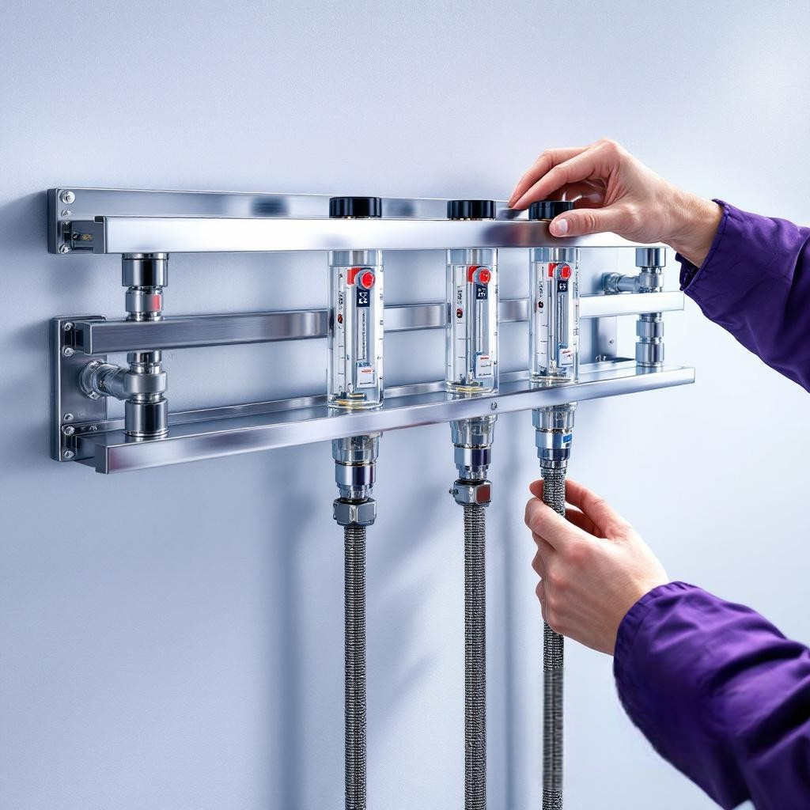

TECEflex
- Надежная система с аксиальной запрессовкой
- Подходит для систем питьевого водоснабжения, отопления, газоснабжения и сжатого воздуха
- Широкая номенклатура компонентов и фитингов
- Имеются фитинги из латуни (с низким содержанием цинка) и бронзы
Подробнее
TECElogo
- Простой монтаж руками
- Подходит для систем питьевого водоснабжения и отопления
- Диаметры до 63 мм
- Подходит для систем питьевого водоснабжения и отопления
Подробнее

TECEfloor
- Поверхностное отопление и охлаждение для новых и модернизируемых строений
- Полнокомплектная система на более чем 30 лет
- Гарантированная совместимость всех компонентов
- Знак Silver Line Quality (SLQ) — надежность, подтвержденная стандартами DIN
- Технически и визуально амбициозные решения
Подробнее
RTL блок